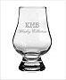

NOTE: This forum is no longer active. This is an archive copy of the forum as it was on 10 March 2018.
Connemara Amontillado finish
Connemara Amontillado finish
 by AlecM » Mon Nov 05, 2012 8:00 pm
by AlecM » Mon Nov 05, 2012 8:00 pm
- AlecM
- New Spirit
- Posts: 19
- Joined: Mon Oct 22, 2012 3:34 pm
Re: Connemara Amontillado finish
 by Pudge72 » Mon Nov 05, 2012 9:22 pm
by Pudge72 » Mon Nov 05, 2012 9:22 pm
-

Pudge72 - Bourbon Barrel
- Posts: 253
- Joined: Sat May 26, 2012 3:22 pm
- Location: Ontario, Canada
Re: Connemara Amontillado finish
 by AlecM » Mon Nov 05, 2012 10:06 pm
by AlecM » Mon Nov 05, 2012 10:06 pm
- AlecM
- New Spirit
- Posts: 19
- Joined: Mon Oct 22, 2012 3:34 pm
Re: Connemara Amontillado finish
 by Good Whiskey Hunting » Mon Nov 05, 2012 11:31 pm
by Good Whiskey Hunting » Mon Nov 05, 2012 11:31 pm
An old man at a bar once said to me "opinions are like a**eh***s everyone has one". I can't remember what we were talking about but I remember the comment and have used it many time since.
Point being that you may find something that you love about a whiskey and someone else hates that particular thing. I don't find the sulphur that he talks about. I have found a few strange tastes and odours in whiskey I tried over the years that he doesn't pick up on. I assume he's sensitive to different things than me.
I however agree with his Power's John's lane so probable our tastes don't differ too much.
By the way that old man also came out with this gem too "children are like farts!, you only enjoy you own" .
https://twitter.com/potstillwhiskey
https://facebook.com/potstillwhiskey/
https://www.instagram.com/potstillwhiskey/
-

Good Whiskey Hunting - Fully mature Cask
- Posts: 1832
- Joined: Tue Dec 01, 2009 11:43 pm
- Location: Wexford
Re: Connemara Amontillado finish
 by Distiller » Tue Nov 06, 2012 9:45 am
by Distiller » Tue Nov 06, 2012 9:45 am
Inspected the whiskey as it was being filled and then religiously once it was in the warehouse...
And has a bottle of the finished product...
I have never got the slightest smell of sulphur from that whiskey.
Not going to put myself up as an expert. But I personally have not smelled sulphur or sulfur in the Connemara Amontillado finish.
- Distiller
- Quarter Cask
- Posts: 72
- Joined: Mon Nov 08, 2010 10:20 am
Re: Connemara Amontillado finish
 by TheWhiskeyBro » Tue Nov 06, 2012 10:57 am
by TheWhiskeyBro » Tue Nov 06, 2012 10:57 am
- TheWhiskeyBro
- Hogshead
- Posts: 962
- Joined: Tue Mar 17, 2009 11:44 am
- Location: Sandyford, Dublin
Re: Connemara Amontillado finish
 by AlecM » Tue Nov 06, 2012 11:27 pm
by AlecM » Tue Nov 06, 2012 11:27 pm
- AlecM
- New Spirit
- Posts: 19
- Joined: Mon Oct 22, 2012 3:34 pm
Re: Connemara Amontillado finish
 by JohnM » Wed Nov 07, 2012 1:40 am
by JohnM » Wed Nov 07, 2012 1:40 am
- JohnM
- Fully mature Cask
- Posts: 1634
- Joined: Wed Mar 18, 2009 9:02 pm
Re: Connemara Amontillado finish
 by IrishWhiskeyChaser » Wed Nov 07, 2012 11:23 am
by IrishWhiskeyChaser » Wed Nov 07, 2012 11:23 am
The Yellow Spot is a wonderful whiskey but I can also see why people could mark it down. There are a few big flavours there that sometimes seem to compete against each other but that is what I like in it and may be what others don't. Your own taste is the only judge in the end and sometimes it is better to enjoy a whiskey rather than dissect it.
- IrishWhiskeyChaser
- Site Admin
- Posts: 2910
- Joined: Tue Mar 17, 2009 1:37 pm
- Location: A Dark Dunnage somewhere in Galway
Re: Connemara Amontillado finish
 by Luke Gough » Thu Nov 08, 2012 3:44 pm
by Luke Gough » Thu Nov 08, 2012 3:44 pm
IrishWhiskeyChaser wrote:It's not just JM, I happened to over hear Dave Broom and another whiskey journalist chatting in Midleton during a launch about getting sulphur from a sample that was offered from cask. Midleton were showing us the big big sherry monsters they had and wanted to show that some like the one offered were too over powering to be bottled as a single cask. And indeed it was a monster and certainly not to every ones taste. However I am quite good at getting the sulphur note and actually like it sometimes in small doses but I could not get anything in the same sample. It certainly was heavy and meaty and not a delicate whiskey and that encounter showed me, that yes, take what "they" say with a pinch of salt.
The Yellow Spot is a wonderful whiskey but I can also see why people could mark it down. There are a few big flavours there that sometimes seem to compete against each other but that is what I like in it and may be what others don't. Your own taste is the only judge in the end and sometimes it is better to enjoy a whiskey rather than dissect it.
Yellow Spot delights me, apart from nose, flavour, etc, because it sharply divides opinions - more whiskeys like this please!
- Luke Gough
- Bourbon Barrel
- Posts: 412
- Joined: Fri Mar 27, 2009 3:28 pm
- Location: Dublin City
Re: Connemara Amontillado finish
 by Distiller » Wed Nov 14, 2012 10:19 am
by Distiller » Wed Nov 14, 2012 10:19 am
Yellow Spot delights me, apart from nose, flavour, etc, because it sharply divides opinions - more whiskeys like this please!
This is a very good point. There is not any wrong or correct answer. There is only opinion and when we can have open discussions about peoples opinions then I think we are in a stronger place. The whiskey that interest me is the one that people are talking about.
I think that there is a wonderful world of whiskey. The important thing is to take the time to enjoy it.
- Distiller
- Quarter Cask
- Posts: 72
- Joined: Mon Nov 08, 2010 10:20 am
Re: Connemara Amontillado finish
 by bredman » Fri Nov 16, 2012 11:56 pm
by bredman » Fri Nov 16, 2012 11:56 pm
AlecM wrote:To be honest that's what I thought when reading his latest Bible. I don't like sulpher either but maybe he has an uber sensitive nose (guess that is what makes him an expert). Thanks for your thoughts!
Hello Alec. The thing about sulphur taint/contamination is that even those of us that are uber sensitive can have sulphur 'blindspots', and disagree with each other on the nature of the off notes.
I know many will question/doubt/deny Jim Murray's sulphur experience with a specific bottling but it would be ridiculous of him to invent it's presence in that specific bottling. Another thing to remember is that the detection of S contamination can be delayed, and finding it in a small sample is unreliable at best (i'm sure a reviewer that assesses many samples will miss it often because of this). Many times i've sipped a whisky detecting no sulphur (although i will know something is initially wrong) only for the sulphur to hit me the next day/session, i've experienced this many times and seen the same with several geeks that have come to the same conclusion.
Pete
-

bredman - Bourbon Barrel
- Posts: 352
- Joined: Mon Oct 25, 2010 2:54 pm
Re: Connemara Amontillado finish
 by IainB » Sat Nov 17, 2012 12:10 am
by IainB » Sat Nov 17, 2012 12:10 am
- IainB
- Hogshead
- Posts: 976
- Joined: Thu Jul 02, 2009 3:48 pm
Re: Connemara Amontillado finish
 by bredman » Sat Nov 17, 2012 12:41 am
by bredman » Sat Nov 17, 2012 12:41 am
IainB wrote:Is it possible that it's not a question of whether the sulphur exist or not but whether it's a taste you like or not.
Absolutely Iain. If the reviewer notes accurately the nature if the contamination* then it's left to each and everyone of us to make that call (very few bottlers will mention it in their 'official' notes leading to claims of deception). A fellow forumite of mine from another forum loves the cordite/gunpowder notes but it must be said he's in an extreme minority. I'm not sure about what ratio of people can detect it in the first place. Estimates seem to range from 1/4 to 1/2 of us can detect it.
* by contamination i'm referring to the sulphur left over by the fumigation candles, and not (possible) excessive sulphur left over from the distillation, which is a different set of flavours. I have read that some sherry producers would fumigate the casks before and after they were used for sherry maturation. Many state the practice has stopped completely (hmm i wonder????), even if this is true it would seem the legacy will be an issue for a long time as casks are reused again and again.
Pete
-
bredman - Bourbon Barrel
- Posts: 352
- Joined: Mon Oct 25, 2010 2:54 pm
Re: Connemara Amontillado finish
 by IainB » Sat Nov 17, 2012 12:51 am
by IainB » Sat Nov 17, 2012 12:51 am
I do know that IDL are among those who have led the way in reducing / eliminating it's influence - apparently they only ship sherry casks in winter so as to reduce the risk of cask spoilage and remove the need for sulphur fumigation.
BTW I love the Connemara Amontillado finish.
- IainB
- Hogshead
- Posts: 976
- Joined: Thu Jul 02, 2009 3:48 pm
Re: Connemara Amontillado finish
 by AlecM » Thu Apr 04, 2013 4:14 pm
by AlecM » Thu Apr 04, 2013 4:14 pm
- AlecM
- New Spirit
- Posts: 19
- Joined: Mon Oct 22, 2012 3:34 pm
Re: Connemara Amontillado finish
 by cianc1 » Thu Apr 11, 2013 2:20 pm
by cianc1 » Thu Apr 11, 2013 2:20 pm
- cianc1
- New Spirit
- Posts: 9
- Joined: Thu Mar 14, 2013 9:18 pm
- Location: Dublin
Re: Connemara Amontillado finish
 by varizoltan » Fri Apr 12, 2013 3:28 pm
by varizoltan » Fri Apr 12, 2013 3:28 pm
cianc1 wrote:Where did you order it, i've been looking for a bottle?
you can only buy it from the celtic whiskey shop
-

varizoltan - Fully mature Cask
- Posts: 1023
- Joined: Fri Mar 20, 2009 11:03 pm
- Location: Hungary